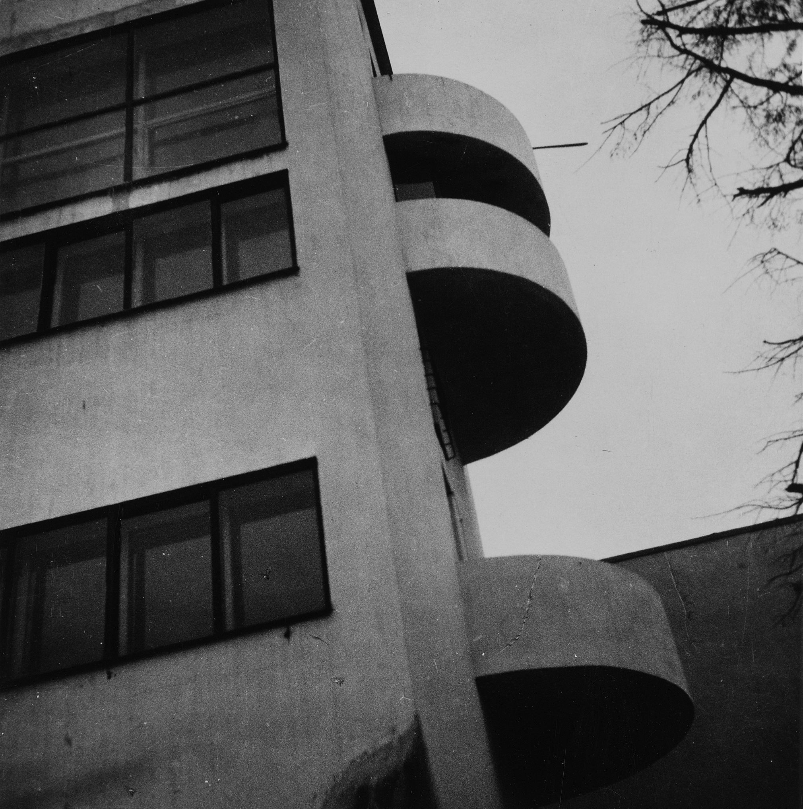
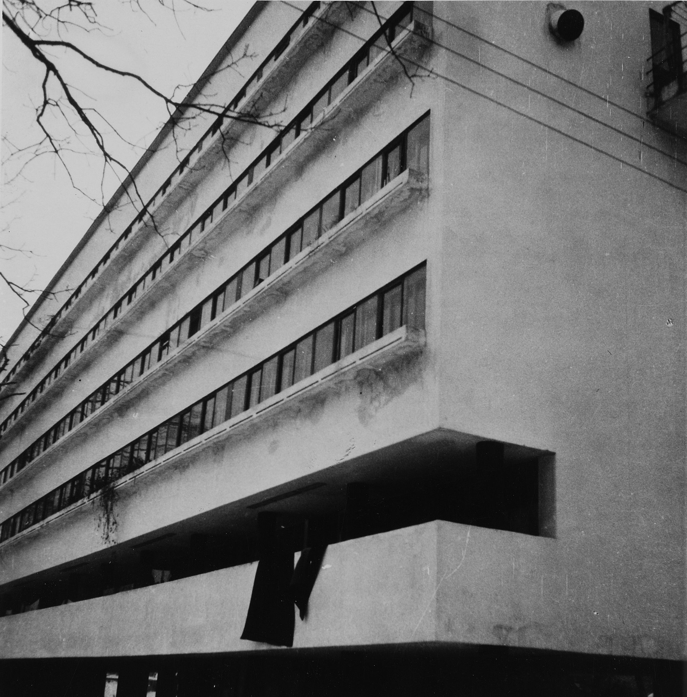
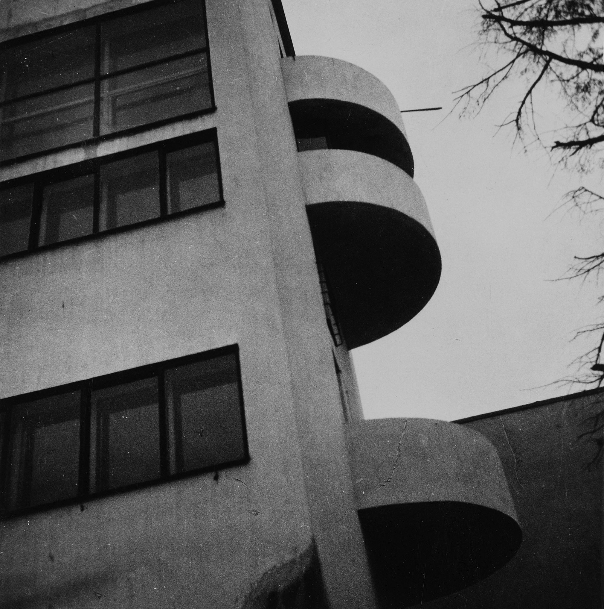
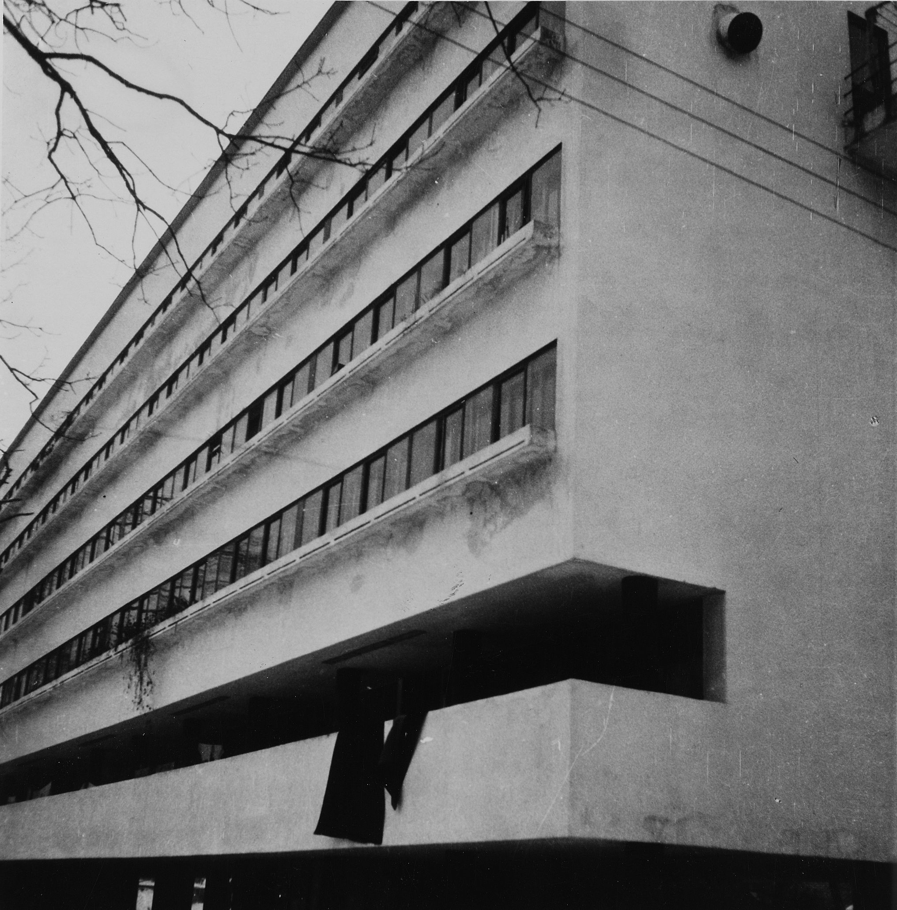

Дом Наркомфина
Дом Наркомфи́на — один из знаковых памятников архитектуры советского авангарда и конструктивизма. Построен в 1928—1930 годах по проекту архитекторов Моисея Гинзбурга, Игнатия Милиниса и инженера Сергея Прохорова[2] для работников Народного комиссариата финансов СССР (Наркомфина). Автор замысла дома Наркомфина М.Я. Гинзбург определял его как «опытный дом переходного типа»[3]. Дом находится в Москве по адресу: Новинский бульвар, дом 25, корпус 1.
С начала 1990-х годов дом находился в аварийном состоянии, был трижды включён в список «100 главных зданий мира, которым грозит уничтожение»[4]. В 1986 начато исследование и работа над проектом реставрации дома по инициативе Владимира Гинзбурга; в 1998 году проект отмечен первой премией фестиваля «Зодчество». В 2016—2020 годах дом отреставрирован по проекту АБ «Гинзбург Архитектс». Результаты исследования и реставрации опубликованы[5][6]. Сейчас Дом Наркомфина — и памятник архитектуры, и жилой дом.
В 2021 году Музей современного искусства «Гараж» инициировал масштабное исследование Дома Наркомфина, в том числе истории жизни его создателей и обитателей на протяжении почти ста лет. Полученное знание становится основой экскурсионных маршрутов, публикаций, разнообразных публичных и просветительских проектов, выстроенных вокруг легендарного дома. Помимо этого, для жильцов дома, патронов Музея и владельцев карт GARAGE доступно кафе Дома Наркомфина, а на первом этаже жилого корпуса открылся книжный магазин.[7]

 



История создания дома Наркомфина
ОСА и Стройком
Дом Наркомфина, или 2-й дом Совнаркома (СНК) РСФСР, стал одним из экспериментальных домов, построенных по результатам теоретических исследований Секции типизации Стройкома РСФСР, созданной по инициативе М. Я. Гинзбурга и работавшей под его руководством в 1928—1929 годы (в работе также участвовали входившие в объединение ОСА М. О. Барщ, В. Н. Владимиров, А. Л. Пастернак, Г. Р. Сум-Шик). Как сказано в монографии Йоганнеса Крамера[нем.] «Das Narkomfin Kommunehaus In Moskau 1928—2012», «аналогичные устремления существовали в то же время и в Германии, где этими вопросами занимался Исследовательский институт экономической эффективности в строительстве и жилищном хозяйстве (RfG[нем.]), хотя полученные им результаты были менее радикальными и менее призрачными»[8].
Учреждению секции предшествовала работа в 1928 году комиссии Стройкома по отбору типовых проектов жилья для строительства. Комиссия пришла к выводу, что большинство известных на тот момент проектов не может быть использовано как типовые, поэтому для разработки типовых проектов была создана Секция типизации[9]. Подготовкой для работы над новым форматом жилья также стала работа над домом Госстраха на Малой Бронной (1926—1927, М. Я. Гинзбург и В. Н. Владимиров) и конкурс на «эскизный проект жилого дома трудящихся», проведённый журналом «Современная архитектура» (Гинзбург подал на конкурс проект «Коммунального дома А-1»). Выставка проектов конкурса состоялась в июне 1927 года[10].
Результаты исследования секции М. Я. Гинзбург доложил на пленуме Стройкома РСФСР, где было принято постановление, рекомендовавшее несколько разработанных жилых ячеек к массовому строительству, а остальные — к опытно-показательному, начиная с 1928 года. Согласно этому постановлению было построено шесть «экспериментальных коммунальных домов переходного типа» в Москве, Свердловске и Саратове. Все они служили для проверки результатов теоретических исследований Секции типизации и были созданы в рамках финансировавшейся государством программы экспериментального строительства 1929 года. Проект дома Наркомфина создан в 1928—1929 годы, строительство велось в 1929—1930 годы.
С. О. Хан-Магомедов называет дом Наркомата финансов самым интересным из шести экспериментальных домов[2].
Сотрудничество М. Я. Гинзбурга и Н. А. Милютина
Заказчиком жилого комплекса выступал нарком финансов РСФСР (1924—1929) Н. А. Милютин, известный как автор схем социалистического расселения и градостроительных концепций соцгорода[11], он же определил функциональные характеристики будущего здания[12]. Сотрудничество наркома Н. А. Милютина и архитектора М. Я. Гинзбурга началось несколько раньше, на строительстве дома Госстраха (1926—1927), — Милютин был инициатором строительства двух домов Госстраха в Москве. Идеи Н. А. Милютина об устройстве жилища воплотились при создании дома Наркомфина (Дома-парохода, или 2-го дома (СНК)).
По теории Милютина[13], «значительное повышение жизненного уровня рабочих и развитие обобществлённых форм обслуживания бытовых нужд трудящихся (общественное питание, ясли, детские сады, клубы и т. п.) постепенно уничтожают значение семьи как хозяйственного соединения. Этот процесс неизбежно приведёт, в конечном счёте, к полной переделке семейных форм общежития. Задача раскрепощения женщины от мелкого домашнего хозяйства и вовлечение её в производство заставляет нас ставить вопрос о всемерном содействии этому процессу»[14].
Задача реализации этих принципов и была поставлена перед авторами проекта. Согласно Е. Милютиной, это был дом «нового быта»[15].
Сметная стоимость строительства составила 10 млн рублей[16]. Строительство жилого корпуса осуществлялось под наблюдением комиссии, возглавлявшейся Н. А. Милютиным. Коммунальный корпус и корпус прачечной строились без утверждённых чертежей[17].
Идеология «опытного коммунального дома переходного типа»
Идеи, связанные с планировочной и объёмной структурой, так же как и с функциональным наполнением дома, изложены в публикациях журнала «Современная архитектура», докладе М. Я. Гинзбурга на пленуме Стройкома[2], а также в его книге «Жилище»[18].
Секция типизации Стройкома РСФСР ставила перед собой задачи разработки экономичного решения проблемы жилья без потери его качества и даже с повышением комфорта, в частности, благодаря естественному освещению не только жилых, но и подсобных зон, в т. ч. коридоров[19].
Гинзбург критически оценивал так называемое моссоветовское строительство («массовое жилищное строительство Москвы первых лет после революции»), считал «экономический эффект» доходного дома более высоким. Поэтому работа Секции началась с анализа типологии «дореволюционного «доходного дома» и её оптимизации.
Так М.Я. Гинзбург писал об этой работе в свой книге «Жилище»:
Работа была начата с анализа ряда типов жилья в дореволюционном, так называемом «доходном доме». Анализ показал, что этот тип жилья при всем своем культурном убожестве и известной степени удовлетворял интересам средней и мелкой буржуазии и притом давал экономический эффект более высокий, чем например массовое жилищное строительство Москвы первых лет после революции.
По словам Виктора Бухли, дом Наркомфина был домом переходного типа от «буржуазного дома» к «социалистической коммуне», и, хотя содержал в себе ранее существовавшие «буржуазные» квартиры (ячейки K и 2F), был структурирован таким образом, чтобы облегчить переход индивида к полностью социализированной жизни (в ячейках F)[20].
Авторы сохраняли объём и высоту жилых помещений, урезая как площадь, так и высоту подсобных. Были удалены вторые лестницы и комнаты домработниц, уменьшены передние, ванные, спальни и кухни, причём последние — как по площади, так и в высоту. «Уплотнение» подсобных зон компенсировалось большей высотой хорошо освещённых гостиных. Рассчитывались пропорции квартир, оптимальные траектории движения человека внутри и схемы эффективной расстановки мебели. Приведённые в книге расчёты эффективности использования жилого пространства построены на рассмотрении отношения кубатуры к жилой площади квартир и параметра k (k=W/P, соотношение общей кубатуры здания к полезной площади жилых ячеек).
Секция Стройкома разработала несколько типов квартир-ячеек разного размера, названных буквами от A до F, причём в маленьких ячейках F размещалась душевая кабина, в больших ячейках А — ванна. Также был разработан «кухонный элемент» сокращённой площади, закрывающийся складной дверью-ширмой[21]. Кухонные элементы были реализованы в доме на Гоголевском бульваре[22]. Почти все созданные тематические жилые дома так называемого «переходного типа» предусматривали наличие завершённых индивидуальных квартир-ячеек и коммунальных зон для постепенного перехода к новому коллективному образу жизни.
Одной из ключевых позиций М. Я. Гинзбурга было создание изолированных квартир для отдельных семей: «Архитекторы Секции типизации пришли к выводу, что в условиях тех лет решение жилищной проблемы неотделимо от разработки типовых проектов экономичной малометражной (в первую очередь однокомнатной) квартиры для отдельных семей[23]. Гинзбург рассматривал жилую ячейку будущего как предельно ужатую и экономную, но традиционную по структуре квартиру на одну семью. Пусть даже однокомнатную, но с индивидуальными кухней и ванной. В этом Гинзбург и его сотрудники-единомышленники были согласны с европейскими архитекторами, решавшими те же задачи, — Ле Корбюзье, Эрнстом Маем, Бруно Таутом, Ханнесом Майером[24].
В работе Секции Стройкома, как и в выступлениях М. Я. Гинзбурга, отразилась борьба идеи экономичного, но комфортного дома с отдельными квартирами и общественным сервисом — с развивавшейся параллельно в тот же период идеей дома-коммуны (того же Стройкома) с полным обобществлением быта. М. Я. Гинзбург противопоставлял свой «коммунальный дом переходного типа» практике домов-коммун и жёстко критиковал последнюю[25]. По словам М. Я. Гинзбурга, «коммунальный дом» должен «способствовать быстрейшему безболезненному переходу к более высоким формам хозяйства». Именно для этого был запланирован развитый коммунальный блок с функциями общественного питания, стирки, уборки и присмотра за детьми — так же, как и минимальный размер кухонь в квартирах[25]. Между тем М. Я. Гинзбург подчёркивает:
«мы сочли совершенно необходимым создание ряда моментов, стимулирующих переход на более высокую форму социально-бытового уклада, но не декретирующих этот переход»[26].
Таким образом, называть «коммунальный дом» Наркомфина «домом-коммуной» принципиально неверно, так как дом Наркомфина был примером реализации идей противников идеологии дома-коммуны и принудительного обобществления быта.
Идеологическое объяснение неизбежности массового коммунального жилья было уже давно придумано в виде идеи «обобществления быта» и принципиального отказа от индивидуальной квартиры как символа мещанского, буржуазного и индивидуалистического хозяйства. Новым стало то, что именно во второй половине 1929 года отказ от семейной квартиры был декларирован на относительно высоком административном уровне (Совнарком РСФСР) и жильё с «обобществлённым бытом» начало в идеологическом смысле официально приобретать характер единственно возможного[27]. Речь теперь могла идти не о коммунальных квартирах с кухнями на несколько семей, а только об общежитиях с общими кухнями и ванными[~ 1].
Однако существование концепции коммунального дома архитекторов ОСА в контексте идеологии советского государства, в конце 1920-х — начале 1930-х всё более трансформирующейся под влиянием повестки сталинской индустриализации и риска репрессий, потребовало от архитекторов максимума гибкости в озвучивании и продвижении своих идей, что приводит к ряду противоречий в выступлениях разного времени. В частности, уже в 1929 году М. Я. Гинзбург говорит о необходимости «100-процентного обобществления производственных процессов жилья» и называет исполненную в доме НКФ задачу расселения 50 семейств, «всё ещё семейств», — «узкой»[~ 2].
Основной акцент архитекторы сделали на встроенную мебель и компактные сантехнические ячейки. Именно отсюда берёт начало практика совмещения ванной комнаты с туалетом, реализованная во всех семейных квартирах дома Наркомфина и знакомая нескольким поколениям советских людей. «Они пытались сократить лишние движения обитателей квартир, а также считали необходимым предложить им питаться в общественных столовых, мыться в общественных банях, сдавать бельё в механические прачечные, читать и отдыхать в библиотеках и клубах»[30].
Рассматривая дом Наркомфина как опытный, М. Я. Гинзбург не считал его типовым и настаивал на том, что создание типовых проектов жилых домов — путь неправильный, ведущий к «однообразию жилой застройки». Гинзбург считал важной «максимальную гибкость» стандартов и разработку таких стандартных элементов, «которые можно было бы всячески комбинировать, варьировать типы жилья, используя одни и те же стандартные элементы»[31][32].
Участок
Под строительство дома для работников Наркомата финансов в апреле 1929 года была отведена территория огородов, ранее принадлежавших двум усадьбам, жилые дома которых были выстроены в XIX веке по красной линии Новинского бульвара; в одном из этих домов в 1910—1922 годы жил Ф. И. Шаляпин и сейчас располагается его дом-музей. Территория полого спускается к Пресненскому пруду, который к 1925 году был осушен и засыпан, а питавшая его река Пресня забрана на этом отрезке в трубу[11].
Состав жилого комплекса
В проектной документации дом именовался 2-м домом СНК. Согласно проекту, комплекс должен был состоять из четырёх корпусов:
- жилого, на 50 семей и приблизительно 200 человек (построен);
- коммунального с кухней, двумя столовыми — крытой внутри и летней на крыше, а также спортзалом и библиотекой (построен, кухня работала в 1930-е годы, продавая еду на вынос; столовая не заработала);
- отдельное круглое в плане здание детского сада с яслями планировалось в центральной части парка (не реализовано; к 1934 году детский сад разместился в коммунальном корпусе; в книге «Жилище» Гинзбург писал: «вся свободная площадь коммунального корпуса занята детским садом»[33]; просуществовал до 1941 года);
- «служебный двор», включающий механическую прачечную, сушилку и гараж, был обращён к Новинскому бульвару (реализован; прачечная функционировала, она обслуживала жильцов в 1930-е годы).